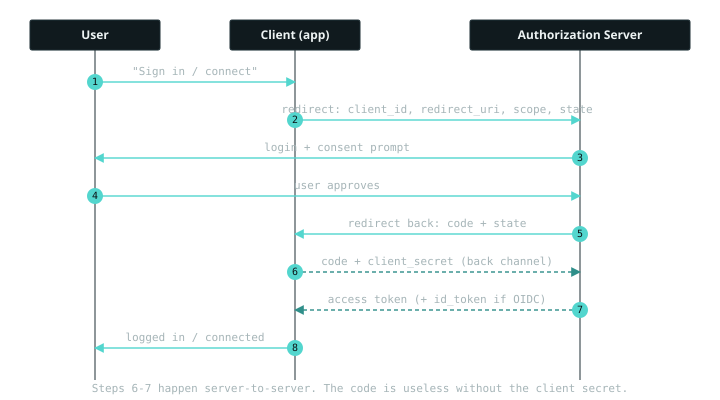
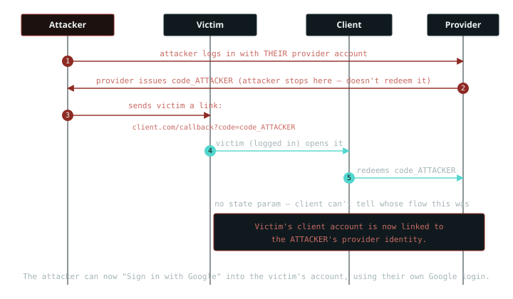

8 January 2026 · web · – views
OAuth 2.0 for testers: the flow, and the three things I always check
OAuth is one of those protocols everyone uses and few can explain. I spent a long time treating it as "the Sign in with Google thing" before I sat down and actually understood what it's for. Once that clicked, the bugs I look for stopped being a checklist I'd memorised and started being obvious results of how the flow works. This is that understanding, written down, plus the three issues I check on every OAuth assessment.
What is OAuth actually for?
One sentence: OAuth 2.0 lets an app do something on your behalf at another service without you handing over your password for that service. You want a photo-printing site to read your Google Photos. You do not want to give the printer your Google password. OAuth is the framework that lets you grant the printer a limited, revocable token instead. That's the whole purpose. It's delegated authorization.
Everything else in OAuth exists to serve that one idea, which is why it's worth holding onto. Roles, tokens, redirects, they all make sense once you see them as "how do we hand out a limited permission slip safely?"
The roles
Four of them, and the printer example names all four. The resource owner is you, you own the photos. The client is the app that wants access, the printer. The authorization server is what logs you in and issues tokens, Google's OAuth endpoint. The resource server is what actually holds the data, the Google Photos API. Two of those are often the same company, which is why people miss that they're separate roles.
The flow
The common one is the authorization code flow. Watch where the code goes, because that's where the security lives.

The key move is the split. The user's browser only ever carries the code, a short-lived, single-use voucher. The actual access token is exchanged for that code server to server, over the back channel, using the client's secret. So even if someone steals the code from the browser, it's useless without the secret they don't have. That front-channel and back-channel split is the single most important thing to understand, and half the bugs below come from breaking it.
OAuth vs OpenID Connect, the distinction people blur
This trips up developers constantly, and the confusion is itself a bug class. OAuth answers one question: what is this app allowed to do? That's authorization. It was never designed to answer who is this user?
OpenID Connect (OIDC) is a thin layer on top of OAuth 2.0 that adds exactly that missing piece: an ID token, a JWT that makes verifiable claims about the user's identity. So the tokens split by job:
Access token means "the bearer may call this API." It's meant for the resource server. ID token means "this user is who they say they are." It's meant for the client, and only in OIDC.
The classic mistake: an app uses a plain OAuth access token as proof of who you are. "You got a valid token from Google, so you must be the Google user you claim." But an access token says nothing about identity, and one issued to a different client can sometimes be replayed. If a login uses an access token where it should use a verified ID token, that's worth pulling on. Identity is OIDC's job; authorization is OAuth's.
What I check as a tester
Three issues, in the order I usually reach for them.
1. redirect_uri manipulation
The redirect_uri tells the authorization server where to send
the code back. If the server validates it loosely, an attacker points it at
a page they control and the code lands in their hands instead of the
client's.
The bug is almost always weak matching. Full-URL matching against a strict allowlist is safe. Prefix or substring matching is not. I test whether the server accepts variations the developer didn't intend:
registered: https://client.com/callback does it also accept? https://client.com.attacker.com/callback ← suffix trick https://client.com/callback/../evil ← path traversal https://client.com/callback?x=@attacker.com ← parser confusion https://attacker.com/https://client.com/ ← open-redirect chain
If any variation is honoured, the code can be diverted. And this is where it
chains: a loose redirect_uri plus an open redirect on the
legitimate client is enough to bounce the code out to an attacker even
when the allowlist looked reasonable. Which leads to the third issue below.
2. Missing or unvalidated state, account binding
The state parameter is OAuth's CSRF defence. The client
generates a random value, sends it in step 2, and checks it matches when the
code comes back in step 5. No state, or a state
that's never checked, and the callback is forgeable.
The consequence is more interesting than "CSRF." It's the reverse of what people expect. The attacker doesn't steal the victim's identity, they plant their own:

The attacker starts an OAuth flow with their own Google account,
grabs the resulting code, and, crucially, doesn't use it. They send the
victim a callback link carrying that code. The victim, already logged into
the client, follows it; the client redeems the attacker's code and links the
victim's account to the attacker's Google identity. Now the attacker
can log into the victim's account on the client any time, using their own
Google login. To test: complete a flow up to the callback, drop or fix the
state, replay it in another session, and see whether the client
accepts it.
3. Code / token leakage via Referer and redirect chains
Even with a strict allowlist, the code can leak after it lands. If
the callback page loads any third-party resource, an analytics script, an
ad, an external image, while the code is still in the URL, that code goes out
in the Referer header to every one of them.
Referer: https://client.com/callback?code=SFY39...&state=xyz
Anyone receiving that request now has the code. Chain it with the redirect_uri weakness from the first issue and you have a full path: divert or leak the code, redeem it, done. I check what the callback page loads while the code is still in the address bar, whether the code is swapped for a session before any third-party request fires, and whether it's single-use and short-lived so a leaked one is already dead.
What I still find awkward
Where to store the token on a client-side rendered site. The advice goes in a circle, and every option has a real problem:
- Use a JWT to protect your site and APIs. Fine, until you have to store it somewhere in the browser.
- Don't put it in
localStorage, because any XSS on the page can read it straight out and exfiltrate it. - Use
sessionStoragethen. Except that's readable by JavaScript too, so XSS gets it just the same. - So keep it in an
HttpOnlycookie, which JavaScript can't read. But now you're back to sending a cookie, which reopens the CSRF questions this whole post is about, and you need SameSite and anti-CSRF tokens again.
There's no clean answer that's both XSS-proof and CSRF-proof by storage alone. In practice it comes down to an HttpOnly, Secure, SameSite cookie for the session plus genuinely fixing your XSS, rather than hoping a storage choice saves you. But I still don't love that the "right" answer is really "pick your risk and mitigate it properly," and I'm not fully settled on it.